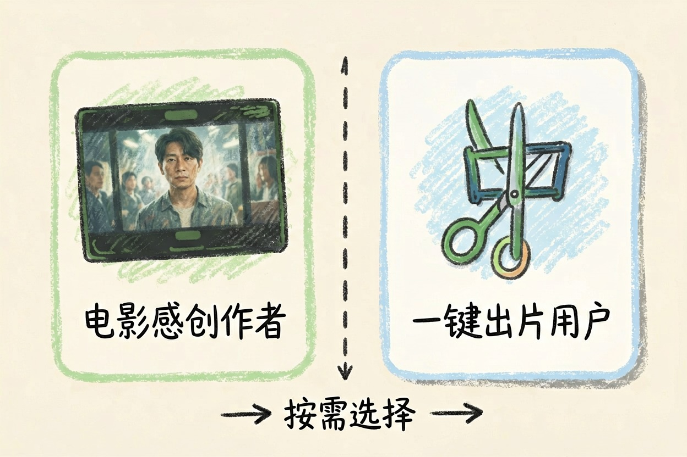
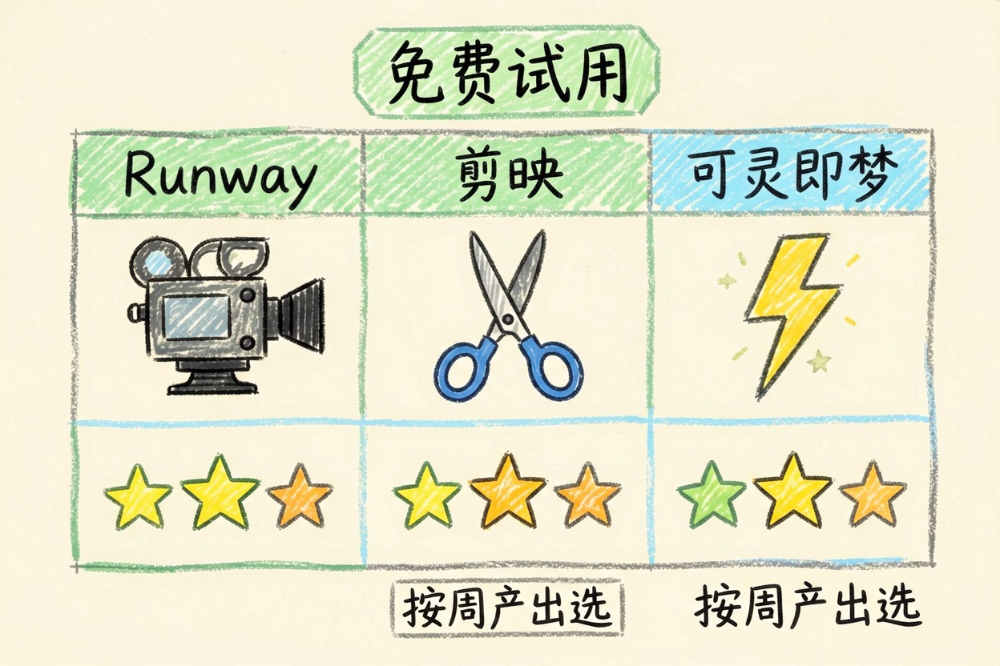

Runway 怎么样？AI 视频剪辑的功能与收费方式
它强在画面质感和运镜，弱在中文配音与国内直连，值不值得折腾，试过免费档再判断。
聊到Runway，先要明确它解决的是哪类问题。
Runway 怎么样？先把结论说清

Runway 怎么样？一句话：适合想要电影感、愿意折腾英文界面的创作者。国内直连和中文体验，是现实短板。想做商业短视频又不想折腾网络条件，先想清楚再决定。
谁适合用 Runway、谁别用
适合的三类：追求画面质感、要影视级运镜的人。已经在做海外内容、不介意英文界面的创作者。愿意研究提示词、把视频当试验田的人。不适合的两类：只想要「一键出片」、剪完就发的人，别在这里找捷径。重度依赖中文配音字幕、又要稳定免费额度的用户，也别急着把它当主力。判断标准很简单。你最近一个月做视频，用得上电影感吗。要横向比一圈，先看AI 视频生成工具横向对比。
它能做什么：生视频和剪辑套件
文字生成视频、图片生成视频、视频再生成视频，它都能做。剪辑端有独立 App 套件，把抠像、擦除、补帧这些活集中在一起。角色一致性是亮点，同一人物跨镜头能保持长相。这是它比很多国产工具多出来的一块。生成质量在线，但每条都要等渲染。做项目，要留出时间。拿这段提示词试一条：
风格：电影感，浅景深，逆光
画面：一只白鹭从芦苇丛飞起，掠过水面
镜头：缓慢推近，跟随主体
时长：约 5 秒，保持画面稳定它做不了什么：中文配音和国内直连

中文语音与字幕不是它的主场。配音质量、字幕时间轴，都别抱太高期待。国内直连不稳定。访问、支付都要额外条件，这是中文用户绕不开的现实门槛。免费额度的稳定性一般，用量大时体验会缩水。网上流传的 runwaychina.com 一类中文镜像多为仿冒。别用，认准官方入口。先把网络方案解决，再谈买不买。只想要顺手成片，剪映反而更省心。
收费怎么算，和可灵即梦剪映怎么分工
免费档能玩到什么程度，官方会调，别信死数字。思路是先试免费档，看每周能不能稳定产出几条成片。免费档能满足需求，就不急着掏钱。和国产工具怎么分工？
| 需求 | 优先考虑 |
|---|---|
| 电影感、影视级运镜 | Runway |
| 短视频成片、中文配音 | 剪映 |
| 创意短片、快节奏生成 | 可灵、即梦 |
这张表的落点是：按你每周的真实产出选工具。价格分档年年变，别拿去年的截图做决定。细节对比见可灵和即梦的视频生成对比和即梦 AI 的出图与视频能力。要中文一条龙，看剪映 AI 的智能成片步骤。别为低频需求直接开年付，先用免费档跑一个月再说。具体档位和价格以 Runway 官网当期为准：Runway 官网、官方文档、帮助中心。Runway 怎么样，一句话：画面是强项，折腾成本要算进去。
本文信息核对于 2026-08-06。AI 产品的价格、免费额度与功能变动频繁，实际以各工具官网当前说明为准。